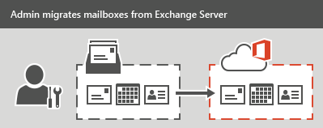
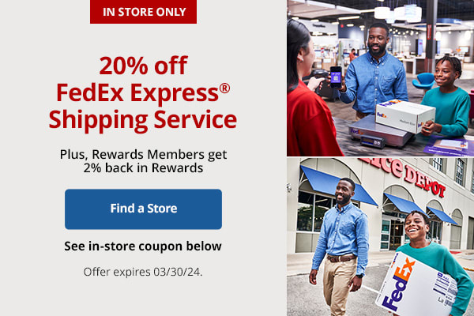

Inicio
Bienvenido a mi currículum web. Aquí encontrarás información sobre mi perfil profesional.
Acerca de mí
Especialista en Soporte de TI con cuatro años de experiencia brindando soporte a usuarios finales, gestionando entornos de Microsoft 365 y administrando dispositivos a través de Azure AD e Intune. Actualmente ampliando conocimientos en ciberseguridad.
Habilidades
- Administración de usuarios y dispositivos
- Sistemas de tickets y gestión de servicios de TI (ITSM)
- Resolución de problemas
- Atención al detalle
- Adaptabilidad
Proyectos
Proyecto de Migración de Correo Electrónico – Rackspace

Soporte en migraciones de correo electrónico desde Exchange 2008/2009 a Exchange 2013 y Microsoft 365 debido a su fin de vida útil. Gestioné migraciones de buzones, solucionando problemas y asegurando transiciones sin interrupciones.
Soporte de Lanzamiento de Software – Office Depot

Brindé soporte para la implementación del nuevo software de etiquetas de envío de Office Depot. Asistí a empleados, resolviendo problemas con el software y hardware relacionado.